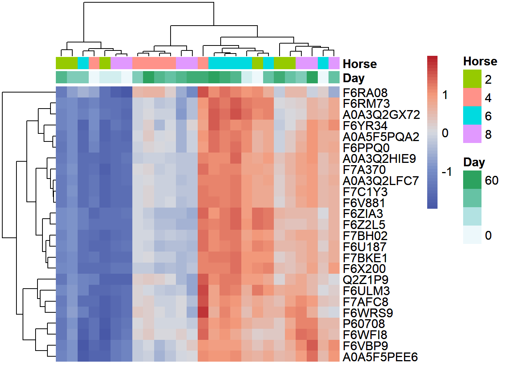
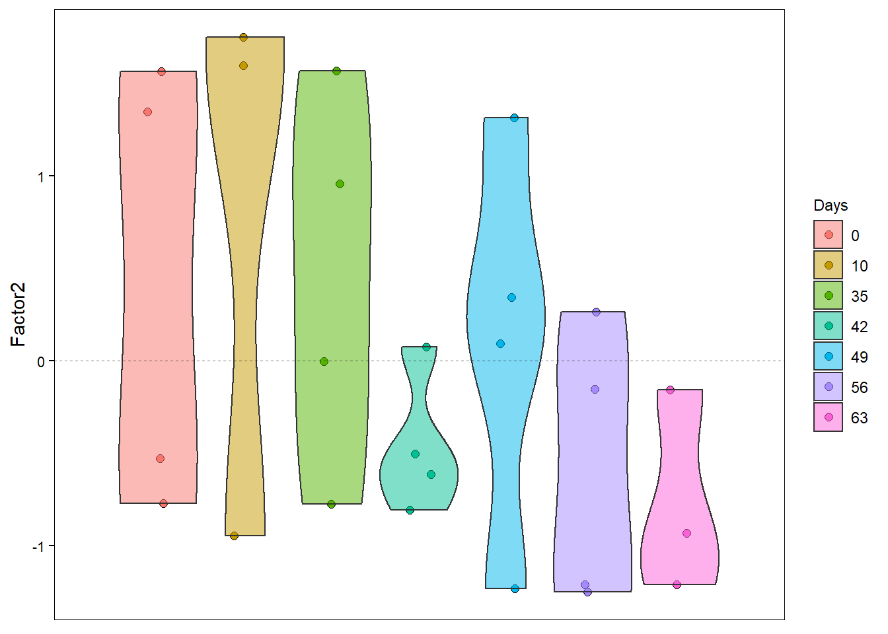
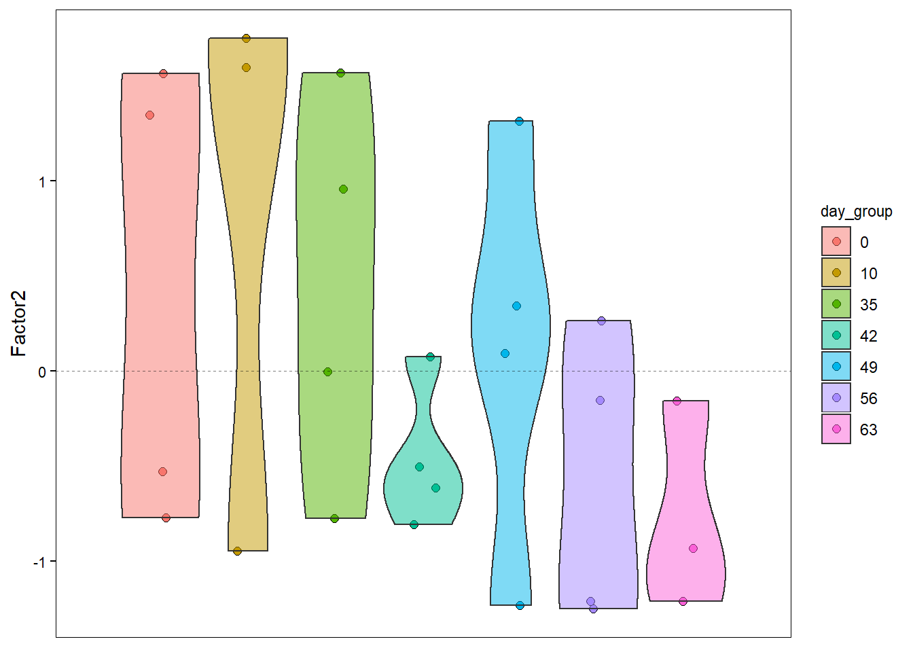
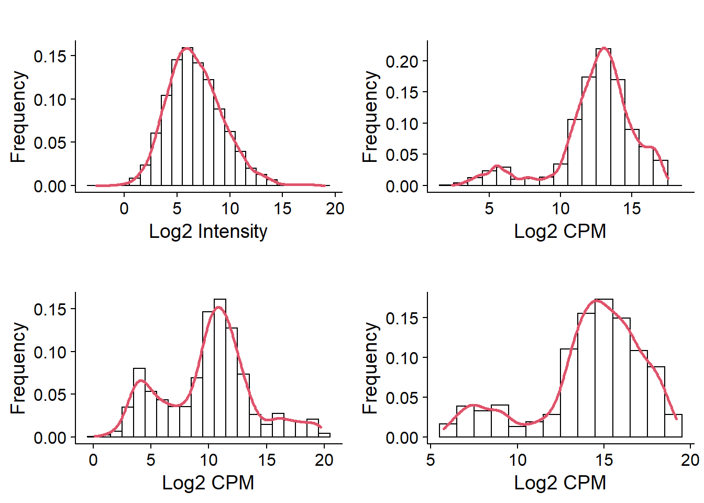
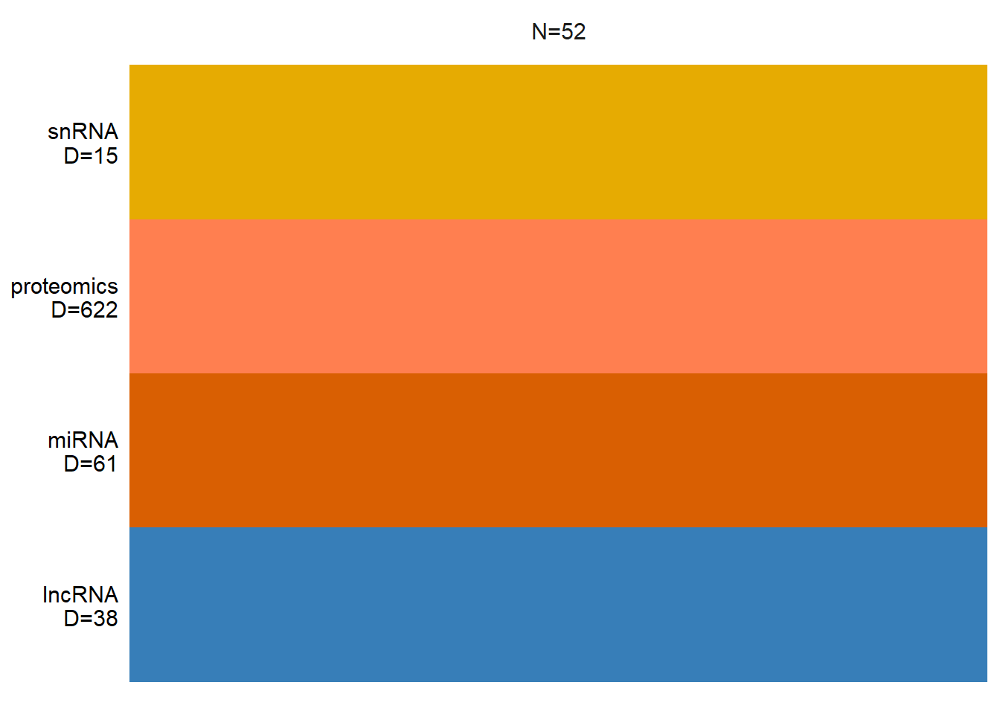
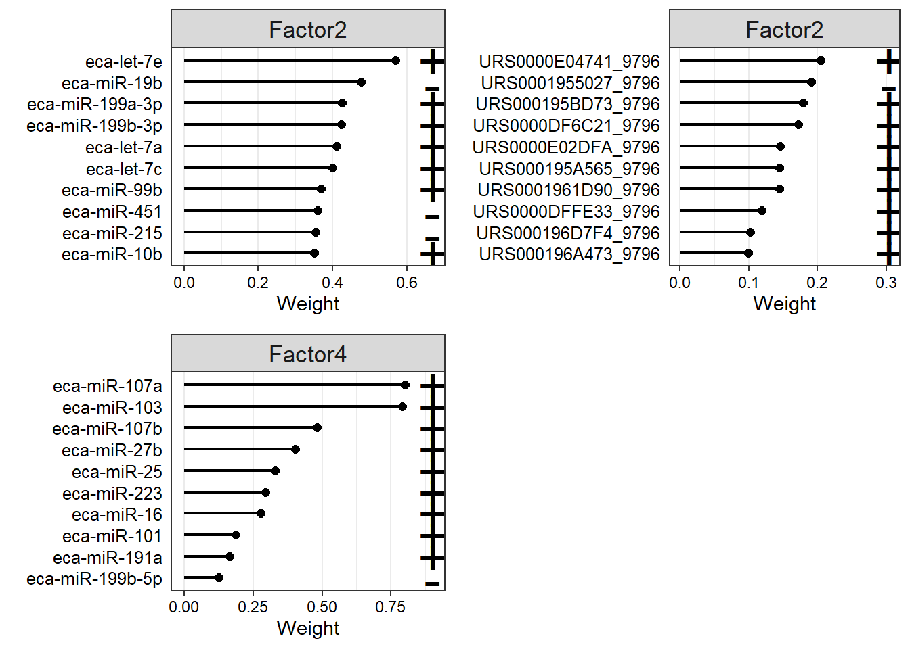
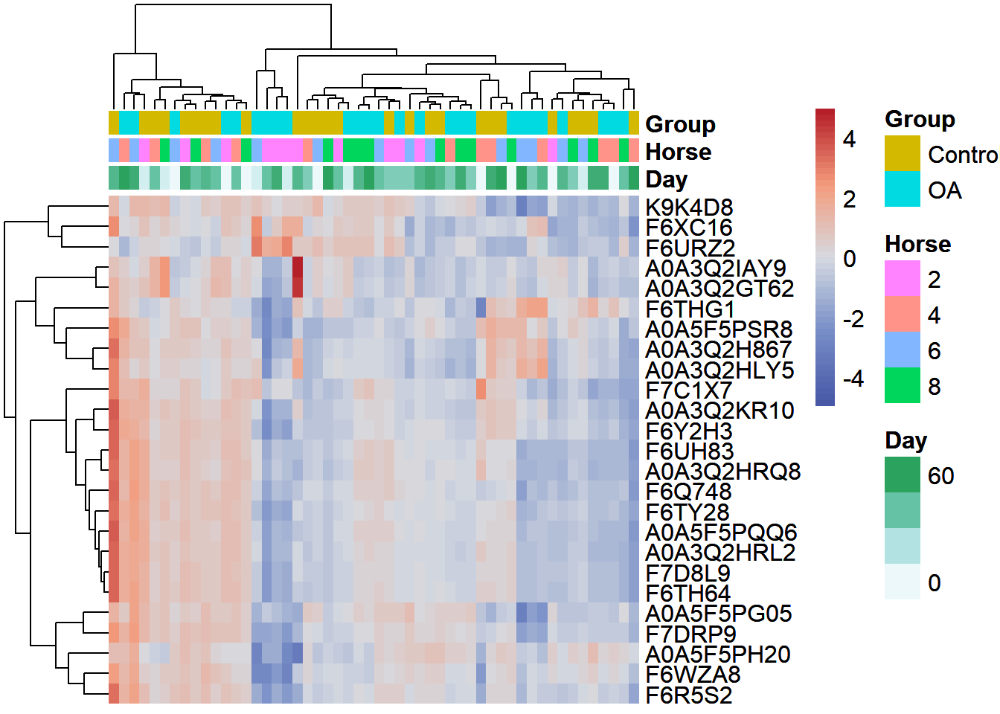

Multi-omics - joint dimensionality reduction
Emily Johnson
2022-09-28
Last updated: 2022-11-11
Checks: 6 1
Knit directory: anderson-peffers_OA/
This reproducible R Markdown analysis was created with workflowr (version 1.7.0). The Checks tab describes the reproducibility checks that were applied when the results were created. The Past versions tab lists the development history.
The R Markdown file has unstaged changes. To know which version of
the R Markdown file created these results, you’ll want to first commit
it to the Git repo. If you’re still working on the analysis, you can
ignore this warning. When you’re finished, you can run
wflow_publish to commit the R Markdown file and build the
HTML.
Great job! The global environment was empty. Objects defined in the global environment can affect the analysis in your R Markdown file in unknown ways. For reproduciblity it’s best to always run the code in an empty environment.
The command set.seed(20220927) was run prior to running
the code in the R Markdown file. Setting a seed ensures that any results
that rely on randomness, e.g. subsampling or permutations, are
reproducible.
Great job! Recording the operating system, R version, and package versions is critical for reproducibility.
Nice! There were no cached chunks for this analysis, so you can be confident that you successfully produced the results during this run.
Great job! Using relative paths to the files within your workflowr project makes it easier to run your code on other machines.
Great! You are using Git for version control. Tracking code development and connecting the code version to the results is critical for reproducibility.
The results in this page were generated with repository version b8abb7e. See the Past versions tab to see a history of the changes made to the R Markdown and HTML files.
Note that you need to be careful to ensure that all relevant files for
the analysis have been committed to Git prior to generating the results
(you can use wflow_publish or
wflow_git_commit). workflowr only checks the R Markdown
file, but you know if there are other scripts or data files that it
depends on. Below is the status of the Git repository when the results
were generated:
Ignored files:
Ignored: .Rhistory
Ignored: .Rproj.user/
Ignored: analysis/.Rhistory
Unstaged changes:
Modified: analysis/03_Differential_expression.Rmd
Modified: analysis/04_Sequencing_QC_normalisation.Rmd
Modified: analysis/06_jDR.Rmd
Modified: analysis/07_Clustering.Rmd
Modified: analysis/08_Functional_enrichment.Rmd
Modified: analysis/_site.yml
Modified: analysis/index.Rmd
Modified: code/utility-functions.R
Modified: data/plasma_lncRNA_data.rds
Modified: data/sf_lncRNA_data.rds
Modified: plasma_model.hdf5
Modified: sf_model.hdf5
Note that any generated files, e.g. HTML, png, CSS, etc., are not included in this status report because it is ok for generated content to have uncommitted changes.
These are the previous versions of the repository in which changes were
made to the R Markdown (analysis/06_jDR.Rmd) and HTML
(docs/06_jDR.html) files. If you’ve configured a remote Git
repository (see ?wflow_git_remote), click on the hyperlinks
in the table below to view the files as they were in that past version.
| File | Version | Author | Date | Message |
|---|---|---|---|---|
| Rmd | b8abb7e | ejjohnson93 | 2022-11-09 | MOFA2 |
| html | b8abb7e | ejjohnson93 | 2022-11-09 | MOFA2 |
| Rmd | 928fd81 | ejjohnson93 | 2022-11-08 | jDR + EDA |
| html | 928fd81 | ejjohnson93 | 2022-11-08 | jDR + EDA |
| Rmd | e34c9f9 | ejjohnson93 | 2022-11-03 | Updated theme + additional analysis docs |
| Rmd | c63c64f | ejjohnson93 | 2022-11-01 | Sequencing files created |
| html | c63c64f | ejjohnson93 | 2022-11-01 | Sequencing files created |
Load libraries
source("./code/utility-functions.R") # load helper functions
library(tidyverse)
library(MOFA2) # factor analysis
library(ggpubr) # utilities to arrange/annotate ggplot2 plots
library(cowplot) # plot theme
library(viridis) # colour schemesLoad and process data
# Plasma
plasma_annotation <- readRDS("./data/plasma_proteomics_annotation.rds")
plasma_pheno <- readRDS("./data/plasma_pheno.rds")
plasma_proteomics_data <- readRDS("./data/plasma_data_norm.rds")
plasma_miRNA_data <- readRDS("./data/plasma_miRNA_data.rds")
plasma_lncRNA_data <- readRDS("./data/plasma_lncRNA_data.rds")
plasma_snRNA_data <- readRDS("./data/plasma_snRNA_data.rds")
# SF
sf_annotation <- readRDS("./data/sf_proteomics_annotation.rds")
sf_pheno <- readRDS("./data/sf_pheno.rds")
sf_proteomics_data <- readRDS("./data/sf_data_norm.rds")
sf_miRNA_data <- readRDS("./data/sf_miRNA_data.rds")
sf_lncRNA_data <- readRDS("./data/sf_lncRNA_data.rds")
sf_snRNA_data <- readRDS("./data/sf_snRNA_data.rds")Convert 0s to NAs as previous analysis showed they were sampling zeroes rather than biological zeroes:
# Plasma
plasma_miRNA_data[plasma_miRNA_data == 0] <- NA
plasma_lncRNA_data[plasma_lncRNA_data == 0] <- NA
plasma_snRNA_data[plasma_snRNA_data == 0] <- NA
# SF
sf_miRNA_data[sf_miRNA_data == 0] <- NA
sf_lncRNA_data[sf_lncRNA_data == 0] <- NA
sf_snRNA_data[sf_snRNA_data == 0] <- NARemove universal spike-ins:
plasma_miRNA_data <- plasma_miRNA_data[-c(1:3),]
sf_miRNA_data <- sf_miRNA_data[-c(1:3),]MOFA
Plasma
Visualuse the distributions of the data:
MOFA2 needs a column in the phenotype data called ‘sample’. Rename the ‘Sample_ID’ column to ‘sample’.
colnames(plasma_pheno)[5] <- "sample"As an input MOFA2 will take a list containing all the different data. Create this list:
plasma_mofa_dat <- list(proteomics = as.matrix(plasma_proteomics_data),
miRNA = as.matrix(plasma_miRNA_data),
lncRNA = as.matrix(plasma_lncRNA_data),
snRNA = as.matrix(plasma_snRNA_data))Create MOFAobject:
MOFAobject <- create_mofa(plasma_mofa_dat)Creating MOFA object from a list of matrices (features as rows, sample as columns)...print(MOFAobject)Untrained MOFA model with the following characteristics:
Number of views: 4
Views names: proteomics miRNA lncRNA snRNA
Number of features (per view): 223 53 29 14
Number of groups: 1
Groups names: group1
Number of samples (per group): 26
The number of features per view can be visualised with
plot_data_overview. Missing samples would be represented as
gaps in the block colours.
plot_data_overview(MOFAobject)Set model parameters. Here three objects are created containing the data options, model options and training options. If the raw counts were used a poisson distribution would be more appropriate.
# Scale views
data_opts <- get_default_data_options(MOFAobject)
data_opts$scale_views <- TRUE
head(data_opts)$scale_views
[1] TRUE
$scale_groups
[1] FALSE
$center_groups
[1] TRUE
$use_float32
[1] FALSE
$views
[1] "proteomics" "miRNA" "lncRNA" "snRNA"
$groups
[1] "group1"# Set number of factors
model_opts <- get_default_model_options(MOFAobject)
model_opts$num_factors <- 6
#model_opts$likelihoods[2:4] <- "poisson"
head(model_opts)$likelihoods
proteomics miRNA lncRNA snRNA
"gaussian" "gaussian" "gaussian" "gaussian"
$num_factors
[1] 6
$spikeslab_factors
[1] FALSE
$spikeslab_weights
[1] TRUE
$ard_factors
[1] FALSE
$ard_weights
[1] TRUE# Set training options
train_opts <- get_default_training_options(MOFAobject)
train_opts$convergence_mode <- "slow"
train_opts$seed <- 123
train_opts$maxiter <- 3000
head(train_opts)$maxiter
[1] 3000
$convergence_mode
[1] "slow"
$drop_factor_threshold
[1] -1
$verbose
[1] FALSE
$startELBO
[1] 1
$freqELBO
[1] 5Prepare MOFA object with modified parameters:
MOFAobject <- prepare_mofa(
object = MOFAobject,
data_options = data_opts,
model_options = model_opts,
training_options = train_opts
)Warning in prepare_mofa(object = MOFAobject, data_options = data_opts,
model_options = model_opts, : Some view(s) have less than 15 features, MOFA will
have little power to to learn meaningful factors for these view(s)....Checking data options...Checking training options...Checking model options...Train model:
outfile <- file.path(getwd(),"plasma_model.hdf5")
MOFAobject.trained <- run_mofa(MOFAobject, outfile, use_basilisk=TRUE)Add phenotype data to the model:
samples_metadata(MOFAobject.trained) <- plasma_phenoVisualise variance explained:
plot_variance_explained(
MOFAobject.trained,
x = "view",
y = "factor",
plot_total = T
)[[1]]
[[2]]
Majority is from proteomics data - likely due to the higher number of features.
Plot correlation between factors:
plot_factor_cor(MOFAobject.trained)
Correlation between factors and metadata:
correlate_factors_with_covariates(MOFAobject.trained,
covariates = c("Day", "Horse"),
plot="log_pval",
alpha="0.15" # p-value threshold
)
correlate_factors_with_covariates(MOFAobject.trained,
covariates = c("Day", "Horse"),
plot="r"
)
Factor 2 is significantly correlated with “day”. Factors 5 and 6 are correlated with horse. Most of the variance in factor 2 is explained by the proteomics data. The variance in factor 1 mostly comes from the miRNA and lncRNA data, however that doesn’t appear to correspond to a biological effect. Factor 3 shows slight correlation with “day”. As the variance is explained by the proteomics and snRNA data this might also be interesting to explore.
We can inspect the weights of the different features contributing to each factor.
proteomics_f2 <- plot_top_weights(MOFAobject.trained,
view = "proteomics",
factor = 2,
nfeatures = 10,
scale = F,
abs = T
)
# Annotate so Uniprot accessions are replaced by protein names
# The accessions are stored as factors so need to be converted back into character vectors
proteomics_f2$data$feature_id <- plasma_annotation[as.character(proteomics_f2$data$feature_id),]
Plot weights for factor 2:
plot_weights(MOFAobject.trained,
view = "proteomics",
factor = 2,
nfeatures = 50, # Top number of features to highlight
scale = F # Scale weights from -1 to 1
)plot_weights(MOFAobject.trained,
view = "miRNA",
factor = 2,
nfeatures = 25, # Top number of features to highlight
scale = F # Scale weights from -1 to 1
)The distribution of weights for the top ranked proteins contributing towards factor 2 are heavily negatively skewed. Only Q28377, F7DZE7, A0A5F5PEG5, and A0A5F5PWX5 are positively associated in the top 50. If the weights for miRNA are plotted it can be seen their contribution to factor 2 is low overall, as the weights range from -0.001 to 0.001.
If we plot factor 1 instead, the weight of the miRNAs is much higher.
miRNA_f2 <- plot_top_weights(MOFAobject.trained,
view = "miRNA",
factor = 2,
nfeatures = 10,
scale = F,
abs = T
)
miRNA_f1 <- plot_top_weights(MOFAobject.trained,
view = "miRNA",
factor = 1,
nfeatures = 10,
scale = F,
abs = T
)It is interesting that miR-126-5P and miR-126-3P are among the miRNAs contributing to factor 2. https://pubmed.ncbi.nlm.nih.gov/33627637/
Visualise the weights for the proteomics and snRNA data contributing to factor 3:
snRNA_f3 <- plot_top_weights(MOFAobject.trained,
view = "snRNA",
factor = 3,
nfeatures = 10,
scale = F,
abs = T
)
snRNA_f4 <- plot_top_weights(MOFAobject.trained,
view = "snRNA",
factor = 4,
nfeatures = 10,
scale = F,
abs = T
)proteomics_f3 <- plot_top_weights(MOFAobject.trained,
view = "proteomics",
factor = 3,
nfeatures = 10,
scale = F,
abs = T
)
# Annotate so Uniprot accessions are replaced by protein names
# The accessions are stored as factors so need to be converted back into character vectors
proteomics_f3$data$feature_id <- plasma_annotation[as.character(proteomics_f3$data$feature_id),]
Create heatmap for proteomics data:
# Create annotation for heatmap
my_sample_col <- data.frame(Day = plasma_pheno$Day)
rownames(my_sample_col) <- colnames(plasma_proteomics_data)
plot_data_heatmap(MOFAobject.trained,
view = "proteomics",
factor = 2,
features = 25,
cluster_rows = TRUE, cluster_cols = TRUE,
show_rownames = TRUE, show_colnames = TRUE,
scale = "row",
denoise = TRUE,
color = viridis(10),
border_color = NA
)Plot factors 2 and 3 together (equivalent to PCA):
p <- plot_factors(MOFAobject.trained,
factors = c(2,3),
color_by = "Day",
shape_by = "Horse",
dot_size = 4,
show_missing = T
)
p + theme_cowplot()
Project the samples onto factor 2 for each time point.
# Add day as a factor to metadata for visualisation purposes
MOFAobject.trained@samples_metadata$day_group <- as.factor(plasma_pheno$Day)
plot_factor(MOFAobject.trained,
factors = 2,
color_by = "day_group",
add_violin = TRUE,
dodge = TRUE
)
plot_factor(MOFAobject.trained,
factors = 3,
color_by = "day_group",
add_violin = TRUE,
dodge = TRUE
)Synovial fluid

colnames(sf_pheno)[6] <- "sample"sf_mofa_dat <- list(proteomics = as.matrix(sf_proteomics_data),
miRNA = as.matrix(sf_miRNA_data),
lncRNA = as.matrix(sf_lncRNA_data),
snRNA = as.matrix(sf_snRNA_data))Create MOFAojbect:
MOFAobject <- create_mofa(sf_mofa_dat)Creating MOFA object from a list of matrices (features as rows, sample as columns)...print(MOFAobject)Untrained MOFA model with the following characteristics:
Number of views: 4
Views names: proteomics miRNA lncRNA snRNA
Number of features (per view): 622 61 38 15
Number of groups: 1
Groups names: group1
Number of samples (per group): 52
plot_data_overview(MOFAobject)
Modify model parameters:
# Scale views
data_opts <- get_default_data_options(MOFAobject)
data_opts$scale_views <- TRUE
head(data_opts)$scale_views
[1] TRUE
$scale_groups
[1] FALSE
$center_groups
[1] TRUE
$use_float32
[1] FALSE
$views
[1] "proteomics" "miRNA" "lncRNA" "snRNA"
$groups
[1] "group1"# Set number of factors
model_opts <- get_default_model_options(MOFAobject)
model_opts$num_factors <- 6
head(model_opts)$likelihoods
proteomics miRNA lncRNA snRNA
"gaussian" "gaussian" "gaussian" "gaussian"
$num_factors
[1] 6
$spikeslab_factors
[1] FALSE
$spikeslab_weights
[1] TRUE
$ard_factors
[1] FALSE
$ard_weights
[1] TRUE# Set training options
train_opts <- get_default_training_options(MOFAobject)
train_opts$convergence_mode <- "slow"
train_opts$seed <- 123
train_opts$maxiter <- 3000
head(train_opts)$maxiter
[1] 3000
$convergence_mode
[1] "slow"
$drop_factor_threshold
[1] -1
$verbose
[1] FALSE
$startELBO
[1] 1
$freqELBO
[1] 5Prepare MOFA object with modified parameters:
MOFAobject <- prepare_mofa(
object = MOFAobject,
data_options = data_opts,
model_options = model_opts,
training_options = train_opts
)Checking data options...Checking training options...Checking model options...Train model:
outfile <- file.path(getwd(),"sf_model.hdf5")
MOFAobject.trained <- run_mofa(MOFAobject, outfile, use_basilisk=TRUE)Add phenotype data to the model:
samples_metadata(MOFAobject.trained) <- sf_pheno
# Add a group-by-day factor
MOFAobject.trained@samples_metadata$Group_day <- as.factor(paste0(sf_pheno$Group, "_", sf_pheno$Day))Visualise variance explained:
plot_variance_explained(
MOFAobject.trained,
x = "view",
y = "factor",
plot_total = T
)[[1]]
[[2]]
Majority is from proteomics data - likely due to the higher number of features.
Plot correlation between factors:
plot_factor_cor(MOFAobject.trained)Correlation between factors and metadata:
correlate_factors_with_covariates(MOFAobject.trained,
covariates = c("Day", "Horse", "Group", "Group_day"),
plot="log_pval",
alpha="0.05" # p-value threshold
)correlate_factors_with_covariates(MOFAobject.trained,
covariates = c("Day", "Horse", "Group", "Group_day"),
plot="r"
)
Factor 4 is significantly correlated with day, though factors 2-5 seem to have some correlation with day. Factor 4 is mostly explained by variance in the miRNA. Factor 2 is correlated with the ‘group_day’ variable, though its worth noting this factor had to be coerced into a numeric variable. For factor 2 miRNA and lncRNA explain more of the variance.
It may be worth looking at the proteomics weight for factor 1 and 5. In factor 1’s case the variance is most strongly correlated with the proteomics but this may be because there is a much higher number of features. Factor 5 seems to have a slight correlation with the biological factors of interest.
miRNA_f2 <- plot_top_weights(MOFAobject.trained,
view = "miRNA",
factor = 2,
nfeatures = 10,
scale = F,
abs = T
)lncRNA_f2 <- plot_top_weights(MOFAobject.trained,
view = "lncRNA",
factor = 2,
nfeatures = 10,
scale = F,
abs = T
)miRNA_f4 <- plot_top_weights(MOFAobject.trained,
view = "miRNA",
factor = 4,
nfeatures = 10,
scale = F,
abs = T
)proteomics_f5 <- plot_top_weights(MOFAobject.trained,
view = "proteomics",
factor = 3,
nfeatures = 10,
scale = F,
abs = T
)
# Annotate so Uniprot accessions are replaced by protein names
# The accessions are stored as factors so need to be converted back into character vectors
proteomics_f5$data$feature_id <- sf_annotation[as.character(proteomics_f5$data$feature_id),]Plot weights for factor 2:
plot_weights(MOFAobject.trained,
view = "miRNA",
factor = 2,
nfeatures = 20, # Top number of features to highlight
scale = F # Scale weights from -1 to 1
)plot_weights(MOFAobject.trained,
view = "lncRNA",
factor = 2,
nfeatures = 20, # Top number of features to highlight
scale = F # Scale weights from -1 to 1
)plot_data_heatmap(MOFAobject.trained,
view = "miRNA",
factor = 4,
features = 10,
cluster_rows = TRUE, cluster_cols = TRUE,
show_rownames = TRUE, show_colnames = TRUE,
scale = "row",
denoise = TRUE,
color = viridis(10),
border_color = NA
)
Project the samples onto factor 2 & 4 for each time point.
# Add day as a factor to metadata for visualisation purposes
MOFAobject.trained@samples_metadata$group <- as.factor(paste0(sf_pheno$Group, "_", sf_pheno$Day))plot_factor(MOFAobject.trained,
factors = 2,
color_by = "group",
add_violin = TRUE,
dodge = TRUE
)
plot_factor(MOFAobject.trained,
factors = 4,
color_by = "group",
add_violin = TRUE,
dodge = TRUE
)JIVE
iCluster
sessionInfo()R version 4.2.0 (2022-04-22 ucrt)
Platform: x86_64-w64-mingw32/x64 (64-bit)
Running under: Windows 10 x64 (build 19044)
Matrix products: default
locale:
[1] LC_COLLATE=English_United Kingdom.utf8
[2] LC_CTYPE=English_United Kingdom.utf8
[3] LC_MONETARY=English_United Kingdom.utf8
[4] LC_NUMERIC=C
[5] LC_TIME=English_United Kingdom.utf8
attached base packages:
[1] stats graphics grDevices utils datasets methods base
other attached packages:
[1] viridis_0.6.2 viridisLite_0.4.0 ggpubr_0.4.0 MOFA2_1.6.0
[5] R.utils_2.11.0 R.oo_1.25.0 R.methodsS3_1.8.2 PCAtools_2.8.0
[9] ggrepel_0.9.1 mixOmics_6.20.0 lattice_0.20-45 MASS_7.3-56
[13] cowplot_1.1.1 reshape2_1.4.4 forcats_0.5.1 stringr_1.4.0
[17] dplyr_1.0.9 purrr_0.3.4 readr_2.1.2 tidyr_1.2.0
[21] tibble_3.1.7 ggplot2_3.3.6 tidyverse_1.3.1
loaded via a namespace (and not attached):
[1] readxl_1.4.0 backports_1.4.1
[3] corrplot_0.92 workflowr_1.7.0
[5] plyr_1.8.7 igraph_1.3.2
[7] BiocParallel_1.30.3 digest_0.6.29
[9] htmltools_0.5.2 fansi_1.0.3
[11] magrittr_2.0.3 ScaledMatrix_1.4.0
[13] tzdb_0.3.0 modelr_0.1.8
[15] matrixStats_0.62.0 rARPACK_0.11-0
[17] colorspace_2.0-3 rvest_1.0.2
[19] haven_2.5.0 xfun_0.31
[21] crayon_1.5.1 jsonlite_1.8.0
[23] glue_1.6.2 gtable_0.3.0
[25] DelayedArray_0.22.0 car_3.1-0
[27] BiocSingular_1.12.0 Rhdf5lib_1.18.2
[29] BiocGenerics_0.42.0 HDF5Array_1.24.1
[31] abind_1.4-5 scales_1.2.0
[33] pheatmap_1.0.12 DBI_1.1.2
[35] rstatix_0.7.0 Rcpp_1.0.8.3
[37] reticulate_1.25 dqrng_0.3.0
[39] rsvd_1.0.5 stats4_4.2.0
[41] httr_1.4.3 dir.expiry_1.4.0
[43] RColorBrewer_1.1-3 ellipsis_0.3.2
[45] pkgconfig_2.0.3 farver_2.1.0
[47] sass_0.4.1 uwot_0.1.11
[49] dbplyr_2.2.0 utf8_1.2.2
[51] here_1.0.1 tidyselect_1.1.2
[53] labeling_0.4.2 rlang_1.0.2
[55] later_1.3.0 munsell_0.5.0
[57] cellranger_1.1.0 tools_4.2.0
[59] cli_3.3.0 generics_0.1.2
[61] broom_0.8.0 evaluate_0.15
[63] fastmap_1.1.0 yaml_2.3.5
[65] knitr_1.39 fs_1.5.2
[67] nlme_3.1-157 sparseMatrixStats_1.8.0
[69] whisker_0.4 xml2_1.3.3
[71] compiler_4.2.0 rstudioapi_0.13
[73] filelock_1.0.2 png_0.1-7
[75] ggsignif_0.6.3 reprex_2.0.1
[77] bslib_0.3.1 stringi_1.7.6
[79] highr_0.9 basilisk.utils_1.8.0
[81] RSpectra_0.16-1 Matrix_1.4-1
[83] psych_2.2.5 vctrs_0.4.1
[85] pillar_1.7.0 lifecycle_1.0.1
[87] rhdf5filters_1.8.0 jquerylib_0.1.4
[89] irlba_2.3.5 corpcor_1.6.10
[91] httpuv_1.6.5 R6_2.5.1
[93] promises_1.2.0.1 gridExtra_2.3
[95] IRanges_2.30.0 codetools_0.2-18
[97] assertthat_0.2.1 rhdf5_2.40.0
[99] rprojroot_2.0.3 withr_2.5.0
[101] mnormt_2.1.0 S4Vectors_0.34.0
[103] parallel_4.2.0 hms_1.1.1
[105] grid_4.2.0 beachmat_2.12.0
[107] basilisk_1.8.0 rmarkdown_2.14
[109] DelayedMatrixStats_1.18.0 MatrixGenerics_1.8.0
[111] carData_3.0-5 Rtsne_0.16
[113] git2r_0.30.1 lubridate_1.8.0
[115] ellipse_0.4.3